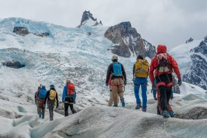
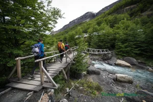
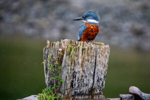
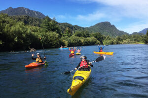
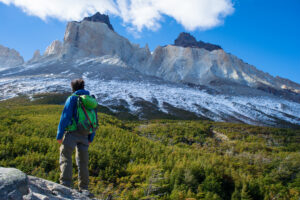
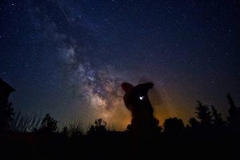

Actividades Imperdibles

Trekking al Glaciar Escondido
Una caminata de dificultad media con vistas increíbles a los picos nevados.

Caminata en el Bosque
Disfruta de la naturaleza en una caminata relajante por el bosque de la cordillera.

Observación de Aves
Descubre una variedad de especies aviares en su hábitat natural.

Paseo en el Lago
Experimenta la tranquilidad del lago mientras navegas en kayak.

Senderismo a lo Alto
Afronta el desafío de ascender a lo más alto de la cordillera.

Observación de Estrellas
Disfruta de un cielo estrellado sin contaminación lumínica.